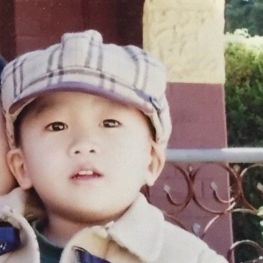

Introduction
Welcome to my Web Systems website!
My name is Jonothan and I am a second year student at University of Technology Sydney.
I am currently enrolled into Bachelor of Computing Science (Honours).
Below is a photo of me :D

I am doing the these subjects this semester:
» 31268 Web Systems » 31268 41078 Computing Science Studio 1 » 31268 41092 Network Fundamentals » 31268 48024 Applications Programming
These are the subjects that I have already completed:
» 31266 Introduction to Information Systems » 31269 Business Requirements Modelling » 31271 Database Fundamentals » 37131 Introduction to Linear Dynamical Systems » 37132 Introduction to Mathematical Analysis and Modelling » 37151 Introduction to Statistics » 37181 Discrete Mathematics » 41039 Programming 1